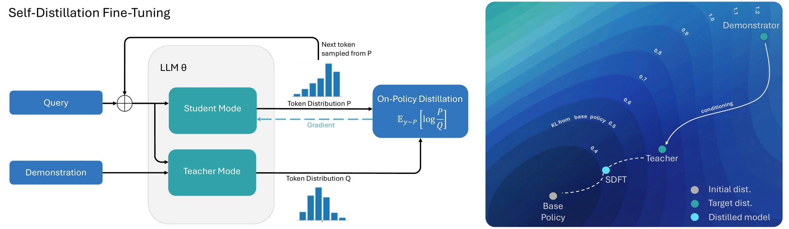
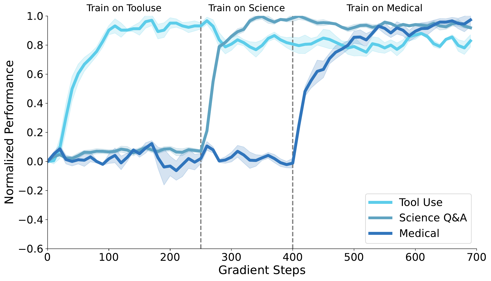
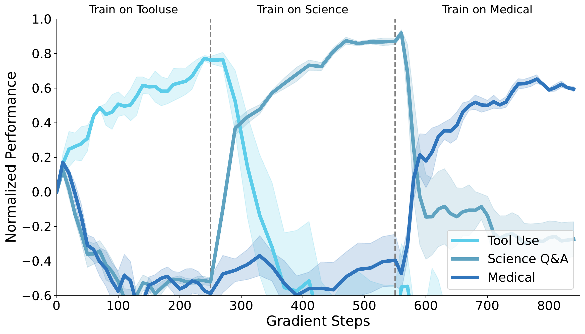
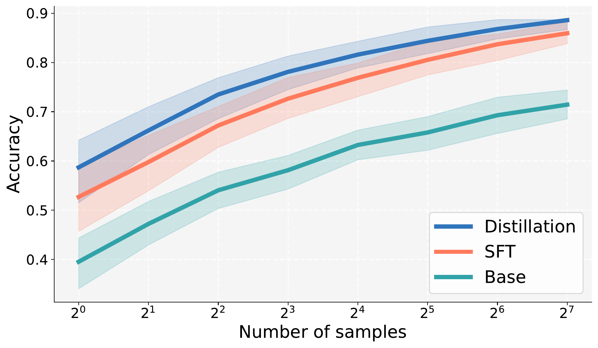
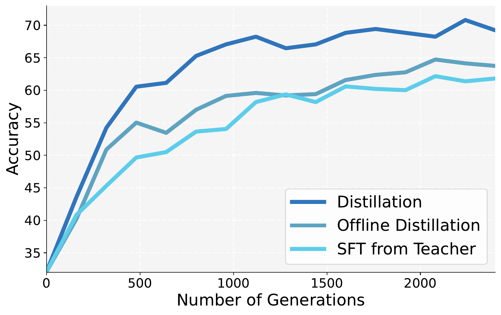
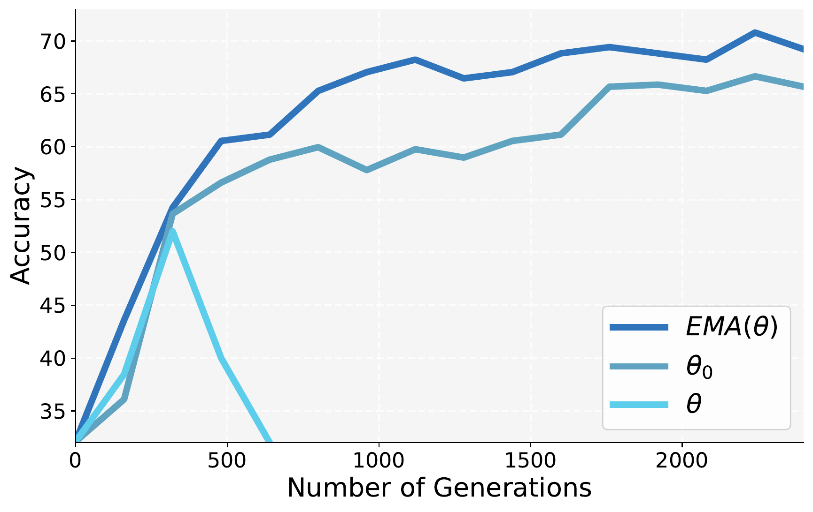

论文解读
SDFT 以“看过示范的自己”作为教师，把专家示范转化为 on-policy 训练信号。与 SFT 相比，它学会新任务的同时遗忘少得多。
Idan Shenfeld、Mehul Damani、Jonas Hübotter、Pulkit Agrawal · MIT、Improbable AI Lab、ETH Zurich
arXiv 2601.19897v2（2026-08-07）· 代码：github.com/Continual-Intelligence/Self-Distillation
只有示范数据时，默认做法是 SFT，而 SFT 是 off-policy 的。
问题：只有示范时，如何做 on-policy 学习？
左：SDFT 的训练流程；右：示范条件教师的输出分布离基座更近，同时保持相同的新任务准确率。

只看问题 $x$，生成回答 $y\sim\pi_\theta(\cdot\mid x)$。训练数据全部来自这里，所以是 on-policy。
同一模型（EMA 权重）额外看到示范 $c$，在学生生成的每个位置给出分布 $\pi(\cdot\mid y_{\lt t},x,c)$。
到基座的 KL：教师 0.68 nats，SFT 模型 1.26 nats；新任务准确率相同。
教师是同一个模型、额外看到示范；学生只看到问题，并负责生成训练轨迹。
作者发现这个 prompt 足以避免教师照抄 $c$；教师会给出自己的回答，体现它对示范意图的理解。
从学生采样 $y$，最小化学生到教师的 KL：
第一步，对 (1) 求梯度。$\theta$ 同时出现在采样分布和 log 比值里；对前者用 score-function 恒等式 $\nabla\pi_\theta=\pi_\theta\nabla\log\pi_\theta$，后者贡献 $\mathbb{E}_{y\sim\pi_\theta}[\nabla_\theta\log\pi_\theta(y\mid x)]=0$：
第二步，按 token 近似。$\log\pi(y\mid x)=\sum_t\log\pi(y_t\mid y_{\lt t},x)$。论文在每个位置只保留该位置的 KL，并对整个词表 $\mathcal{V}$ 精确求和（analytic per-token estimator）：
(2) 不等于 (2a)：它丢掉了 $y_t$ 对后续 token 比值的影响，等价于在固定的学生前缀上最小化 $\sum_t D_{\mathrm{KL}}$。这就是附录 A.1 所说的“序列层面有偏”。
以下每项要么在附录中做了 ablation，要么是所有主实验的默认设置。
学生可能学到教师的措辞，如 “Based on the text…”。对前几个 token 屏蔽损失即可去除，且不损害准确率。
在一个假设下，自蒸馏等价于 on-policy RL，其奖励由模型自身的 ICL 能力给出。
这一等价关系针对 reverse KL。论文报告的实验实际使用 forward KL，因此 IRL 论证是方法的动机，而不是对实际运行的损失的精确描述。
论文没有给出遗忘的上界；它的论证由三步串联而成，其中只有第一步是严格的数学。
“要高奖励，又不要离 $\pi_k$ 太远”有两种写法。式 (3) 给改动定一个价格 $\beta$；也可以给奖励定一个及格线 $v$，在及格的策略里挑改动最小的：
取 $v$ 为式 (3) 的最优解 $\pi^*_{k+1}=\pi_k\,e^{r/\beta}/Z$ 自身的平均奖励 $v=\mathbb{E}_{\pi^*_{k+1}}[r]$（$Z=\sum_y\pi_k(y\mid x)\,e^{r(y,x)/\beta}$ 为归一化常数），两种写法的答案相同。对 $\pi^*_{k+1}$ 的定义取对数，得 $\log\frac{\pi^*_{k+1}}{\pi_k}=\frac{r}{\beta}-\log Z$。对任意 $\pi$：
令 $\pi=\pi^*_{k+1}$：第一项为 0，得 $D_{\mathrm{KL}}(\pi^*_{k+1}\,\|\,\pi_k)=v/\beta-\log Z$。及格的 $\pi$ 满足 $\mathbb{E}_\pi[r]\ge v$，于是 $D_{\mathrm{KL}}(\pi\,\|\,\pi_k)\ge 0+v/\beta-\log Z=D_{\mathrm{KL}}(\pi^*_{k+1}\,\|\,\pi_k)$，等号仅当 $\pi=\pi^*_{k+1}$：在所有达到同样奖励的策略中，$\pi^*_{k+1}$ 离 $\pi_k$ 最近（标准的 I-projection 结论，论文只给出闭式解）。
Qwen2.5-7B-Instruct，ToolAlpaca：模型拿到工具 API 说明和用户请求，需要给出正确的工具调用。
坐标轴 0–1.5 nats。
第三步依赖先前工作的经验规律；推导本身与实际训练之间也有几处出入。
作者先前的工作（Shenfeld 等 2025）及 Chen 等 2025 发现：遗忘程度随微调后策略与基座策略在新任务输入上的 KL 散度增大而增大，
并且 on-policy 训练会倾向于选择 KL 较小的解，而 SFT 不会。
这是相关性规律，不是定理；本文直接引用，未重新推导。
SFT 在专家前缀上提高专家 token 的概率：
若 $\pi_\theta(y^\star_t\mid\cdot)$ 很小，梯度会强行搬动大量概率质量，参数改动也会波及无关输入。
SDFT 在学生自己的前缀 $y\sim\pi_\theta$ 上，向同一模型给出的分布 $\pi(\cdot\mid y_{\lt t},x,c)$ 靠拢：目标本就在模型自身的分布附近，所需改动更小。
两类后训练适应：学习新技能，以及吸收新事实。
选择模型未专门调优过的任务（不同于数学、代码）。
HellaSwag、TruthfulQA、MMLU、IFEval、Winogrande、HumanEval 的平均分（lm-eval-harness），作为遗忘的度量。
全参数微调，TRL，单张 H200。每种方法分别搜索 learning rate、batch size、epoch 数，报告验证集最优的 checkpoint。greedy decoding，3 个 seed。SDFT max generation length 2048（技能）或 1024（知识）。
在三个任务上，它都是唯一一个提升新任务、且旧能力没有明显下降的方法。
在各任务上训练后，每个旧基准的得分。红色表示比基座下降超过 5 分。
| 训练任务 → 方法 | 新任务 | HellaSwag | HumanEval | IFEval | MMLU | TruthfulQA | Winogrande | 平均 |
|---|---|---|---|---|---|---|---|---|
| 基座（Qwen2.5-7B-Instruct） | — | 62.0 | 65.8 | 74.3 | 71.7 | 47.9 | 71.1 | 65.5 |
| Science Q&A（基座 32.1） | ||||||||
| SFT | 66.2 | 55.0 | 54.8 | 35.3 | 64.6 | 36.8 | 73.7 | 53.4 |
| SFT + re-invoke | 66.0 | 61.6 | 63.4 | 52.9 | 68.7 | 45.2 | 70.0 | 60.2 |
| DFT | 54.8 | 57.6 | 67.0 | 60.4 | 69.4 | 38.8 | 68.2 | 60.2 |
| SDFT | 70.2 | 60.9 | 68.9 | 66.8 | 70.7 | 46.5 | 73.1 | 64.5 |
| Tool Use（基座 42.9） | ||||||||
| SFT | 63.2 | 57.3 | 50.0 | 49.8 | 70.2 | 37.5 | 73.1 | 56.0 |
| SFT + re-invoke | 63.1 | 61.7 | 68.9 | 59.1 | 71.5 | 49.1 | 71.6 | 63.7 |
| DFT | 64.2 | 59.7 | 61.4 | 60.2 | 71.6 | 40.2 | 71.5 | 60.8 |
| SDFT | 70.6 | 61.6 | 68.3 | 71.9 | 71.5 | 47.3 | 71.7 | 65.4 |
| Medical（基座 30.1） | ||||||||
| SFT | 35.5 | 59.5 | 62.1 | 56.6 | 70.5 | 39.8 | 72.9 | 60.2 |
| SFT + re-invoke | 35.6 | 61.5 | 63.1 | 67.6 | 70.0 | 42.3 | 71.4 | 62.6 |
| DFT | 36.2 | 61.9 | 64.6 | 74.6 | 71.6 | 40.1 | 71.3 | 64.0 |
| SDFT | 40.2 | 61.4 | 67.7 | 72.3 | 71.5 | 47.3 | 71.9 | 65.4 |
同一个模型依次在 Tool Use → Science Q&A → Medical 上训练。每个任务分别归一化：0 = 基座模型，1 = 两种方法中达到的最高准确率。


论文只给出曲线，没有各阶段结束时的数值表；阴影为不同 seed 的波动范围。注意归一化以“两种方法的最好成绩”为 1，图上的高低只在同一任务内可比。
规模实验在 Science Q&A 上，pass@k 在 Tool Use 上（temperature 1.0，top-p 0.95）。
坐标轴 −14 到 +14；竖线为 0。论文正文只给出差值。

基座模型对这些 2025 年事实一无所知；SDFT 吸收它们的方式能迁移到间接问题上。
| 方法 | Strict | Lenient | OOD |
|---|---|---|---|
| 基座 | 0 | 0 | 0 |
| 在文章上 continual pretraining（CPT） | 9 | 37 | 7 |
| 在问答上 SFT | 80 | 95 | 80 |
| SDFT | 89 | 100 | 98 |
| Oracle RAG（upper bound 参照） | 91 | 100 | 100 |
在短答案上做 SFT 会压制推理模型的长 CoT。SDFT 的教师就是同一个推理模型，所以目标分布保留了它的推理风格。
坐标轴 0–100。
坐标轴 0–5000 token。
作者在 §5 中说明：把非推理模型变成会写显式 CoT 的模型很困难。SDFT 能保持一种生成风格，但不能创造一种新风格。
图 6 用同一个示范条件教师比较三种用法；图 8 比较三种教师参数。均在 Tool Use 上。


| 因素 | 结论 |
|---|---|
| 训练分布 | on-policy > 两种 offline 变体 > SFT |
| 教师参数 | EMA > 冻结基座；用学生会发散 |
| 教师上下文 | 文章 + 答案 89 > 文章 75 > 答案 37 |
| KL estimator | analytic per-token 最好；Rao-Blackwellized 无收益 |
| 每题 rollout | 1 次足够 |
| KL 方向 | forward KL 最好（所有结果均使用） |
| 模型规模 | 3B −3.3；7B +4.0；14B +6.9 |
| Epoch 数 | SDFT 2（技能）/ 4（知识）；SFT 1 之后无收益 |
图 6、8 只有曲线（准确率坐标 35–70），没有列出最终数值。
SDFT 与 on-policy RL 互补：它覆盖的是“有示范、没有奖励”的情形。
以下两页是我们的评估，不是论文的陈述。
SDFT 让模型在只有示范、没有奖励的情况下做 on-policy 学习：学生在自己的 rollout 上，向以示范为条件的同一模型（EMA 权重）蒸馏。在 Qwen2.5-7B 的技能学习和知识注入任务上，它的新任务表现高于 SFT，同时几乎不损失旧能力。
每一条都对应到论文的具体章节。
左栏是论证的核心局限；右栏是值得验证的方向。